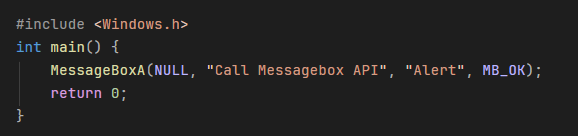
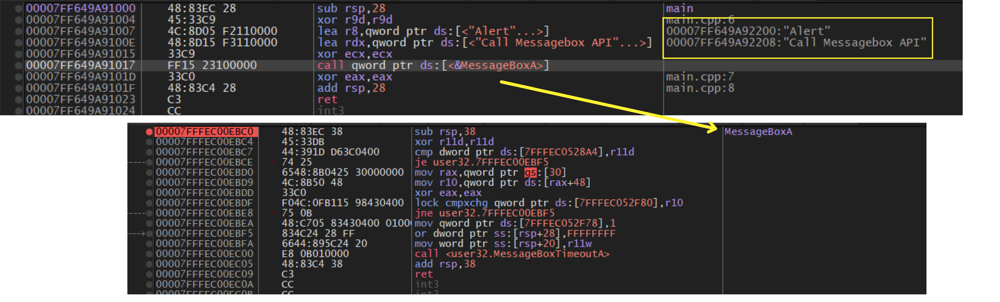

Overview: Today, we are going
to study about API Hooking. The main purpose of API Hooking and how
it works underhood.
This is one of the techniques used by many security solutions to
dertermine if code or its API params is malicious. So let get start.
References: IredTeam
This sample was created on the x64 architecture.
So lets see the image below of simple to project calling to MessageBoxA, the API from user32.dll

Debug this project with x64dbg

From this image, we can see that in my project when I use MessageBoxA API, it call to the instructions that performs MessageBoxA and it keep calling to lower layer. I will have a post about this later.
So that's basically how API was called from the program